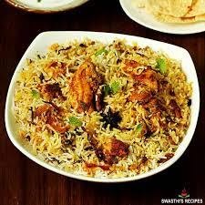

Daal Makhni
Slow-cooked black lentils in a creamy, buttery sauce, a true comfort dish.

Matar Paneer
Cubes of soft paneer and green peas simmered in a flavorful tomato and onion gravy, seasoned with traditional Indian spices.

Samosa
Crisp pastry pockets filled with spiced potatoes and peas, served with tangy tamarind chutney.

Biryani
Fragrant basmati rice layered with tender meat or vegetables, flavored with saffron and spices.